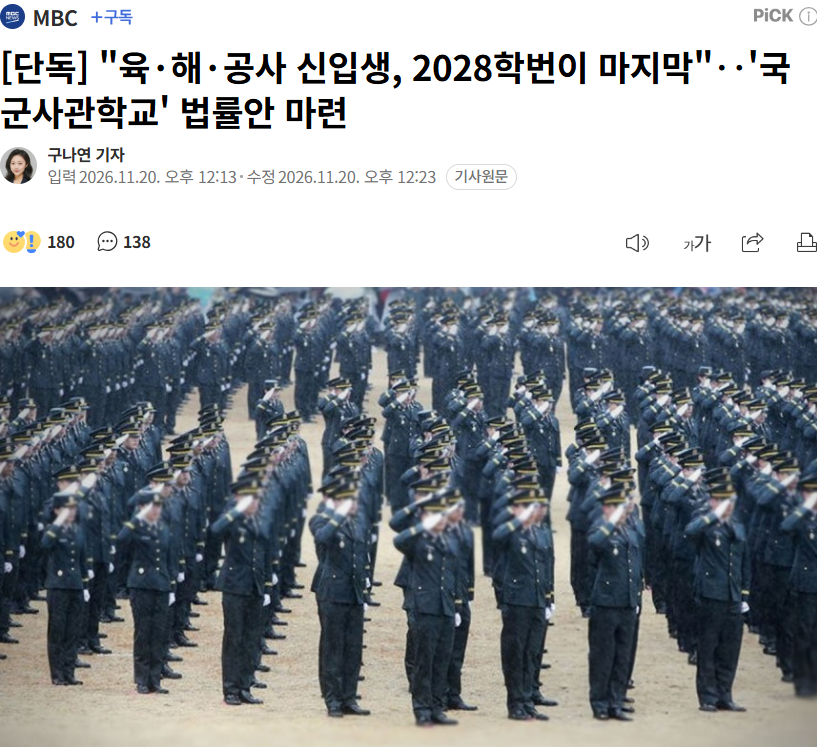

2029년부터 전군 땅개화 시작

2029년부터 전군 땅개화 시작
레전드 일처리 ㅋㅋㅋㅋㅋㅋ
진짜 대단하다 시팔ㅋㅋ
쿠데타는 육사가 일으켰는데 해사 공사가 폐지되네 씹ㅋㅋㅋㅋ
그러게. 벼룩 다리 자르면 귀가 먹지 ㅋㅋㅋ
드디어 바다위에서 K9이 포를 쏘고 하늘 위에서 흑표가 날라다니는걸 볼수있는거냐?
정권 바뀌면 검찰청 부활하고 사관학교도 다시 나눌 건데, 뭐
화무십일홍. 암만 그렇게 망가뜨려봐야, 권력 그리 오래 안간다.
빨리 국립대도 다 통합해서 전국 서울대 ㄱㄱ
공사랑 해사를 폐교한다고? 아니 어쩌려고?
뭘어쩜ㅋㅋㅋㅋ 졸속통합 시키는중임
어쩌라고요 ㅋㅋ
존나 계집년들 스러운 일처리 ㅋㅋㅋㅋ
https://youtube.com/shorts/AyTE6xdHt2k?si=mwWNQZ7_7SuvfEZx
병신 탁상행정
나라를 갑자기 휙휙 바꿔대는데 하도 전반적으로 바꿔대니까 어디서부터 반발해야할지도 종잡을수가 없음 검찰개혁도 결국에는 국회의원들 권력상승의기반이 되니까 비판해야할 집단의 목소리도 약해지고 씨발 ㅋㅋㅋ
한곳만 장악하면 전군 다먹게 만들어주는거지ㅋㅋㅋ
나라 꼬라지ㅅㅂ
한곳에 모이면 육해공이 하나되서 쿠데타일으키는거 아님?
진짜 난 이해가 안 가서 그럼
쿠데타 막는거랑 육사 없애는거랑 무슨 인과관계가 있는거임?
해공사는 뜬금없이 불똥튀고?
옹호 하는 애들 하나도 안 보이네 진짜 왜 하는거냐 씨발 집 값이나 잡을 것이지
강남 건물주: 제가 왜요?
경찰대도 없앤다더만 진짜 삼사군경통합 태국 군부쿠데타처럼 성공시키는게 목푠가?
저러면 육사를 없애는게 아니라
공해사를 육사밑으로넣어서
육사체급 더 불려주는꼴 아님?
육사로는 쿠데타 힘든거 알았으니까 젊은때 해군,공군까지 포섭하는 큰그림 ㅋㅋ
뭐야 씨발 이건
이제 쿠데타군이 한강에 고속정몰고 들어오고 세종시 위로 전투기 날리는 꼴 볼수있는건가
그냥 인구구조 박살나고 나라 돈이 없어서 그래. 정치 어쩌고는 핑계고 다 돈임.
부지 합치면 수천억에서 1조정도 바로 캐쉬 꽂히고 교양과목 교수 및 관련 인원 싹 다 날리면 연간 수십억 절약 되겠지.
실제로 통합사관학교 굴리는 나라는 많움. 일본 캐나다 체코 등등
물론 중국 북한 러시아가 난리치는데 이렇게 하는게 맞냐는 다른 문제겠지만 결국 돈임
정부 예산 계획 보면 국방만 이러는게 아님 온갖 모든 부서 사업계획이 다 그런방향으로 가고 있음
진해 해사 망해?
미친놈들인가 육사를 조져야지
왜 해사 공사를 조지는건데???
통합 반역 전문대 만드는거임?
합쳐 두는게 더 위험한거 아닌지...?
모르겠다. 근데 장교들이 죄다 사관학교 출신인거는 아니니까 학사장교, 학군단 들도 단기교육 받고 잘들 하는거 보면 오히려 실무에서 지속적인 보수교육이 제일 중요한듯